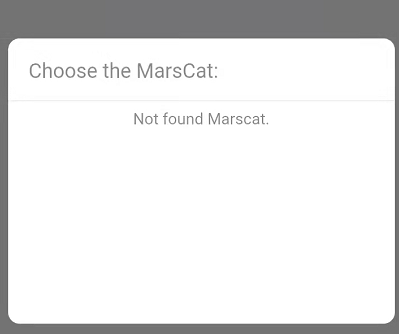
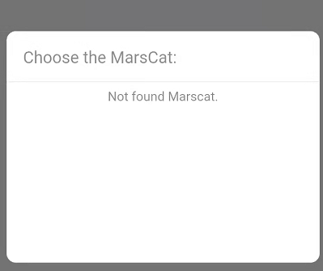
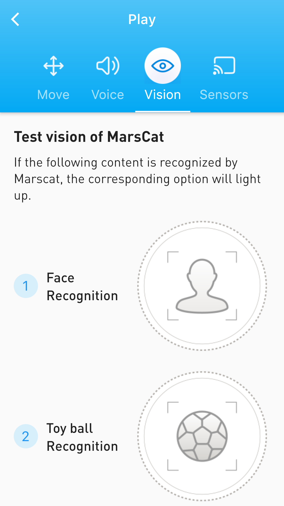
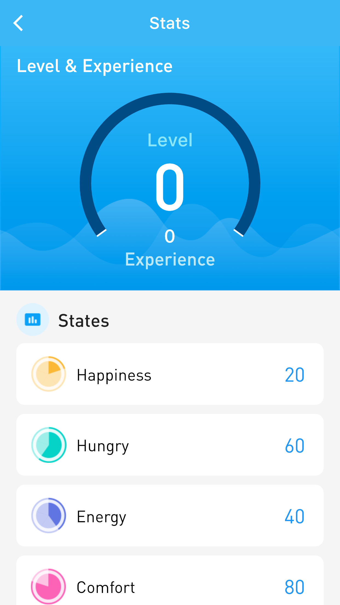

6.MarsApp
6.1 Introduction
MarsApp is designed for you to better interact with MarsCat, and help you enjoy the life of MarsCat.
Installation
Install the MarsApp to your smartphone.
1.Google: MarsCat – Elephant Robotics
You can find download on official website shown in the following picture.

2.search marscat on Apple Store

Version Support
Supported operating system for MarsApp for smartphones
Language Support
- Chinese
- English
Online settings
Open app--click connecting Bluetooth--choose the MarsCat you want to connect
- Search successfully: the page shows "connect", click it
- Search unsuccessfully: the page shows "not find MarsCat"
If the search fails, please check the status of your Bluetooth and MarsCat and try again.
Software update
It is recommend to update your MarsApp to the latest version.
Unable to connect
- MarsCat's Bluetooth signal could not be searched
 

Solution: Restart MarsCat & Reload MarsApp
2.Staying on the Bluetooth connection page, and you can't turn on Bluetooth

Solution: When the App is first used, a request permission box pops up, If you don't see the request permission box after updating the App, you should give the app permission in the phone settings and try again.
6.2 How to use MarsApp
Follow the on-screen instructions to set up MarsCat with MarsApp.



P1: Learn the basic parameters for personalization settings.
You can visit "Basics" in the menu to
- Set MarsCat's eye color
- Set MarsCat's sex
- Set MarsCat's sleep time
P2: Record dynamic data in real time to track growth trajectory.
You can use "Status" in the menu to
- Learn about MarsCat's Levels and Experience Values
- Learn about the status of MarsCat
- Learn about MarsCat's daily index
P3: Remote control to unlock more interactive games
You can visit "Play" in the menu to
- Control MarsCat's move
- Display MarsCat's voice
- Display MarsCat's vision
- Display MarsCat's sensor